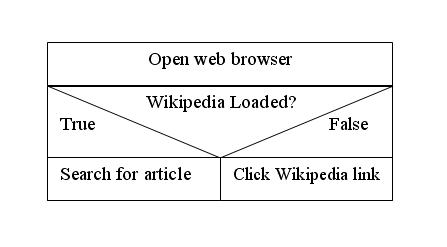
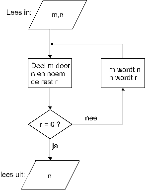
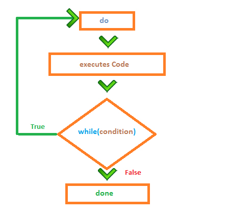

Als je wilt programmeren, moet je vanuit een probleemstelling een oplossing kunnen bedenken. Dus: "EERST DENKEN, DAN DOEN!".
- Je ontwerpt de lay-out van de interface (kan ook later).
- Je bepaalt welke gebeurtenissen zullen plaatsvinden, met andere woorden wat de interactie met de gebruiker zal zijn (invoer / uitvoer).
- Je stelt voor elke gebeurtenis vast hoe het programma dient te reageren.
- Je programmeert per gebeurtenis de noodzakelijke code om de gepaste reactie te verkrijgen.
- Je denkt na over een doeltreffende foutafhandeling (en programmeert die ook).
- Je test de gemaakte toepassing uit en stuurt de oplossing eventueel bij.
- Je breidt je toepassing uit met de ontbrekende foutafhandeling.
vb analyse van een toepassing om de BMI te berekenen aan de hand van een ingegeven gewicht en lengte
- opzoeken formule
BMI = gewicht in kg / (lengte in meter in het kwadraat)
- Oplossing = één procedure
- Gebeurtenis: klikken op knop
- Invoer: lengte, gewicht --> opvangen in variabelen (double)
- Verwerking: berekenen BMI --> opvangen in variabele (double)
- Uitvoer: messagebox met BMI
Analyse dmv Nassi-Shneiderman diagram (structogram)
Een stap in de procedure wordt voorgesteld door een rechthoek. Binnen de rechthoek staat de beschrijving van de stap. (zie verder in deze cursus)

Schematisch voorstellen:

